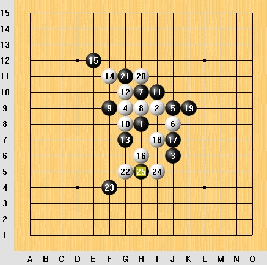
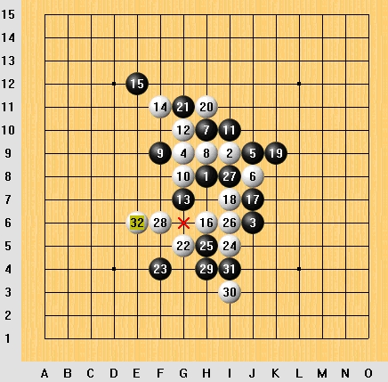
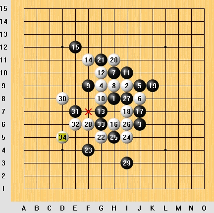

[原创]白先胜（简单）
首页
五子棋交流
#1 [原创]白先胜（简单） 作者：飞翔 发表时间：2006-6-26 0:08:18
自己下的一盘棋，当时我执白 24后黑25中间随手一防，感觉我有机会赢哈.

#2 Re:[原创]白先胜（简单） 作者：飞翔 发表时间：2006-6-27 21:39:15
答案[hf] [/hf]
#3 Re:[原创]白先胜（简单） 作者：飞翔 发表时间：2006-6-27 21:40:51
答案
[hf][/hf]
#4 Re:[原创]白先胜（简单） 作者：求学者 发表时间：2006-6-29 18:09:57
看一看，瞧一瞧
#5 Re:[原创]白先胜（简单） 作者：fuzj 发表时间：2006-7-4 13:17:19
瞧一瞧
#6 Re:[原创]白先胜（简单） 作者：无尘 发表时间：2006-7-10 18:21:14
顶下,好题目.
#7 Re:[原创]白先胜（简单） 作者：emile 发表时间：2006-7-30 17:11:42
是挺简单
#8 Re:[原创]白先胜（简单） 作者：黄太子 发表时间：2006-7-31 7:39:14
看一看啊
#9 Re:[原创]白先胜（简单） 作者：xialin 发表时间：2006-8-4 19:30:42
抓禁？
#10 Re:[原创]白先胜（简单） 作者：lxb972 发表时间：2006-8-4 19:49:13
yyyyyyyyyyyyyyyyyyyyyyyyyyyyyyyy
#11 Re:Re:[原创]白先胜（简单） 作者：baihe 发表时间：2006-8-21 23:01:16
kan yi xia
#12 Re:[原创]白先胜（简单） 作者：冰乐爽鱼 发表时间：2006-8-22 6:49:56
hh
#13 Re:[原创]白先胜（简单） 作者：大鹏 发表时间：2006-8-22 17:32:05
谢谢
#14 Re:[原创]白先胜（简单） 作者：素心如颜 发表时间：2006-8-24 0:19:11
看看看。学习
#15 Re:[原创]白先胜（简单） 作者：天涯游子 发表时间：2006-8-31 11:03:07
看看
#16 Re:[原创]白先胜（简单） 作者：天涯游子 发表时间：2006-8-31 11:10:31
答案2没有仔细研究过,粗看一下,觉得如果第29手下I4,还能简单胜吗?(其实答案1已经是完胜了).<TABLE width="90%" border=0><TBODY><TR><TD>飞翔
请回答.</TD></TR></TBODY></TABLE>
#17 Re:[原创]白先胜（简单） 作者：longfx 发表时间：2006-8-31 14:05:23
两个冲四后利用禁手取胜
#18 Re:[原创]白先胜（简单） 作者：zzp197 发表时间：2006-8-31 19:40:31
学习
#19 Re:Re:[原创]白先胜（简单） 作者：检查用户名 发表时间：2006-9-4 15:49:13
我来试试看：）
#20 Re:Re:Re:[原创]白先胜（简单） 作者：水清无鱼 发表时间：2006-9-5 12:53:24
抓长连撒
#21 Re:[原创]白先胜（简单） 作者：孤独剑 发表时间：2006-9-14 11:57:10

#22 Re:[原创]白先胜（简单） 作者：浩楠 发表时间：2006-9-15 8:09:25
看看
#23 Re:[原创]白先胜（简单） 作者：110q 发表时间：2006-9-16 9:51:15
g6抓
#24 Re:[原创]白先胜（简单） 作者：杨华明 发表时间：2006-9-20 7:41:13
G6禁
#25 Re:[原创]白先胜（简单） 作者：破网的蜘蛛 发表时间：2006-10-12 14:43:16
看一下
#26 Re:[原创]白先胜（简单） 作者：cjh199 发表时间：2006-10-14 17:10:34
白棋I6，I3，F6，黑33禁手
#27 Re:[原创]白先胜（简单） 作者：学者 发表时间：2006-10-15 15:12:46
I6-I3-F6-E6,三三禁手.
#28 Re:[原创]白先胜（简单） 作者：格林鲍尔 发表时间：2006-11-4 11:58:26
看看你是怎么走的
#29 Re:[原创]白先胜（简单） 作者：阿晕 发表时间：2006-12-2 14:30:59
G6抓禁
#30 Re:[原创]白先胜（简单） 作者：星 发表时间：2007-1-3 14:27:15
抓G10 三三禁
#31 Re:[原创]白先胜（简单） 作者：石天 发表时间：2007-1-17 23:00:09
学习一下
#32 Re:[原创]白先胜（简单） 作者：爵味 发表时间：2007-8-19 19:36:52
ＢＵＣＵＯ你成请教过了
#33 Re:[原创]白先胜（简单） 作者：jun 发表时间：2007-8-25 20:51:44
好题目 楼主强
#34 Re:[原创]白先胜（简单） 作者：姑苏斤欠 发表时间：2007-8-25 21:59:12
感觉有禁手真的很有意思哈！